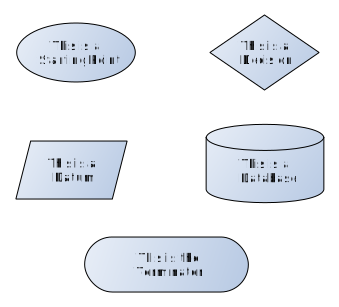

Defining Business Rules
How to create unambiguous definitions
Goals
- Reinforce understanding of MECE criterion
- Learn how to use decision trees to develop and communicate rules
MECE Criterion
- Mutually Exclusive
- Everything in a computer is black and white (or 0/1), so rules must be as well.
- For each rule there needs to be a consistent way to identify a single valid value.
- It is not a rule if any records can fall into multiple categories simultaneously.
- Completely Exhaustive
- Every possible outcome must be accounted for.
- This is the time where "What if" scenarios are extraordinarily valuable and helpful.
- If there is a category/value that is not accounted for it is not a rule
- The MECE criterion is the only standard.
- Data managers do not define business rules.
- Data managers can and will support you as Data Owners and Data Stewards to define effective business rules
- Using this framework reduces confusion and improves data quality.
Pictures make rules easier to define and communicate

- DRA has selected some free software for you to create your very own business rules
- For now, go to: yEd Live to try a cloud based version of the tool.
- To install on your computer later go to: yWorks
- Aside from supporting a lot of different diagram types, we can export higher quality files that are easy for web browsers to handle.

Time for a demo...
How to define business rules
- Beginning to End
- Mirror the process that results in your data
- Student Enrolls in district
- Student/Family answers home language survey
- Student takes English language screener
- If test score is below threshold student is identified as an English Learner
- End to Beginning
- Start with the known valid values
- Students can be classified as not being identified for G/T programming, identified for G/T, or identified for Primary Talent Pool
- If student is in grades K-3 they would be identified for primary talent pool
- Did student have necessary evidence for formal identification
- Did student have qualifying assessment scores
Next meeting
- We need to identify data owners and a file containing the data elements will be available on Sharepoint to do this
- Data Owners need to identify their data stewards
- Next week we will go further in-depth about the role of data owners